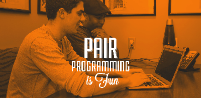
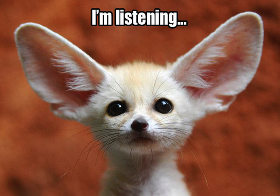

Culture
Pair Programming and All Its Wonders
DBC emphasizes the importance of pair programming, and this is reflected in the syllabus: during the remote portion we pair three times a week. With sessions lasting up to two hours it's a pretty intimate experience. But coding is rarely done in a bubble, so it's important to get an early start on our ability to play with others.
Studies have shown companies who embrace pair programming reap the rewards. This means less bugs, higher-quality code and incrased job satisfaction. It also puts employees in positions where they can learn something new, and with an undertone of team-building and communitcation. It may come with an upfront cost, but whether your goal is to increase profitability or increase employee happiness, the benefits from a culture of pairing are ample. Here's some of my initial reflections on what it's been like learning how to pair - and all while learning how to code!
Pairing:
If I had to wrap up my so-far experience with pair programming, it would be "pretty darn cool." For some context, I'd consider myself an introvert. I also have a unique learning style. Some might call it "slow," but hey, it feels more "methodical" to me. It takes me an extra moment to get things, but when I do I'm pretty good to go. But mix those two things together and I was a little intimidated to share Sublime with someone else. And that's just the interpersonal stuff. What about when it comes to simply adding another brain to the mix? Two minds trying to solve the same problem, but perhaps in different ways? We all have different approaches.
I'm not sure if it's because DBC armed us with a diplomatic approach, but 100% of my pairing sessions have been notably mutual when it comes to everyone having a voice. This might be different after the honeymoon period wears off and I've spent days with the same people. But so far, so good.
What's been particularly rewarding is simply having another brain at the table. And in the case of DBC, it's a well-vetted brain when it comes to problem solving mixed interpersonal skills. When it comes to driving, I've felt confident my navigators were watching my steps and catching errors, and they were one step ahead of me when I was finishing writing code. As a navigator, I've enjoyed learning about other people's approach, feeling comfortable talking about who's idea is "better" or might make more sense. In the end, I think the Wikipedia article is right. It may take 15% longer to get a solution, but it's with less errors, and there's a good chance it's a stronger solution. We also both tended to learn something new, and in the rare case that one of us might have gone way down the wrong path, having a partner kind of puts on the bumper lanes and keeps things moving in the right direction, potentially making up for a lot more than 15% of the time.
Pair programming doesn't come without a share of frustrations. I'm yet to have anything noteworthy, but one time I felt a little left behind the driver. I'm a believer in each of the "benefits" listed in the intro, and one of them is the ability to learn from my partner. When I found myself left behind, it's kind of like, "well why am I here? I'm not helping and can't learning something like this." I take mutual responsibility for a situation like this and need to be confident to speak up. But that's one of the potential pitfalls. Another important part of pairing is giving and receiving feedback.
Feedback:
DBC stresses that good feedback should follow the "ASK" acronym: Actionable, Specific and Kind. Actionable means it suggests something they can work on. It's specific in that the person knows exacatly what you're talking about. And it's kind, which can be the most ambiguous. Some people think kind means nice, but alas, they're spelled differently for a reason. For me, kind really just mean's not rude. And even "rude" has it's on interpretations. But ASK-like feedback can be direct, and direct doesn't mean that something isn't kind.
I enjoy giving feedback. All of my sessions have been positive, so they typically begin with some specific, positive feedback. Then I get into some constructive feedback. I always try to be specific about the situation and how it made me feel. Then I offer actionable advice and follow up with the benefit it could bring. It's been a pretty helpful formula.
Receiving feedback is another story. It's easy to dish but not always easy to take! What's funny is we're all still fine-tuning our feedback-giving, so receiving can be quite a roller coaster. Some are just way too nice (it's possible!), and some are too direct. On that note, it's probably good to consider the medium by which feedback is given. In our case it's via a web forum, and we all know words on a screen can get lost in translation.
When I read the "proper" feedback, particularly the constructive portions, I feel a mixture of emotions. Judgement and belittled are a few. And sometimes I feel like it means I'm not doing well enough. Recall an earlier posts where I discussed the difference between "being good" versus simply always trying to get better. Sometimes when I receive constructive feedback I start drifting towards the wanting-to-be-good mindset, so any non-positive feedback can sting. However I have a new approach for this system. Before opening my feedback I remind myself a few things: that I'm at DBC because I want to get better at programming. Thus, I want to learn things and don't currently consider myself perfect. Thus it's obvious that I could use some adjustments! I remind myself that I'd prefer to have a 'growth mindset' and always be getting better, so any painful words only set me in the right direction. And finally, I remember the quote, "feedback is a gift." It truly is. No one has all the answers, so anytime we're lucky enough to receive feedback, it's best to embrace it.
In conclusion, pairing is great and feedback is great. I typically enter my pairing sessions with bit of intimidation and always leave feeling pretty excited. The biggest thing I'm going to work on for now is to be a little calmer during my sessions and on better listener. I've received three pieces of feedback that hint something along those lines: one said I was a little intense, one said I seemed flustered when I didn't understand something, and another said they weren't sure if what they were saying was coming across correctly. This is all news to me but definitely feels worth exploring!
Thanks for reading, and here's some further reading on pair programming via TechCrunch.